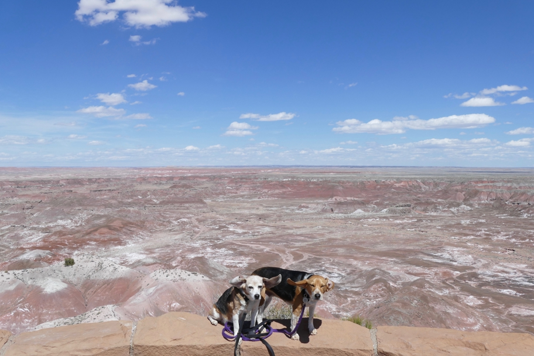

<--Previous Up Next-->

We'd seen some of the Painted Desert around Tuba City, AZ, driving from the Grand Canyon to Oljato, but now we get a closer look.
Arizona Halley Beagle Petrified Forest National Park Wallace Beagle